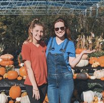

I'm a simple girl. If you ask me what gives my life meaing, I'll reply with the following:
- My son
- Plants
- Food
If you've spent any time on my blog, this is self-evident.
My son, Tristan, is my muse. He and my husband (and myself, of course) are the
people I cook for, and it is from them that many of my ideas take form.

The cuisiner I am today began many years ago when
I began dabbling in the kitchen. While I truly developed as a cook once I started my family, I've loved experimenting with flavors and challenging my culinary skills since I was in my late teens. I love having company over and cooking for them. Furthermore, some of my favorite memeories with my mother and sisters take place, cooking together.

It wasn't until I began cooking for my little one that I decided to start a garden. While the garden, first and foremost, serves as a space to call my own, it also provides ingredients that I know I can trust, and never have to feel question feeding to Tristan. I don't have to give as much thought to things like "how important is it really to buy organic?" But, anywway, likeI said, the garden is primarily a space for me. I have had so much bringing my vision to life, learning about the lifecycle of all kinds of plants, and, more than anything, making it my own.

I began this blog to prove something to myself, and to others. While I'm no longer a stay-at-home mom full time (staying true to myself, I work in a greenhouse), it can be difficult to be a stay-at-home mom. There's this notion people have about stay-at-home moms, that we don't do anything, or perhaps that all we do is care for our children. I want the world to know that I'm more than Tristan's mom. Yes, I am first and foremost his mother, but there's more to stay-at-home moms than meets the eye. We create, we grow, and, heck, I do woodworking! How's that for breaking the mom stereotype?
I have tons of endeavors outside of what I've depicted on this website. If you're interested in what else I'm up to, check out my facebook page. You can find pricing information by dowloading this.